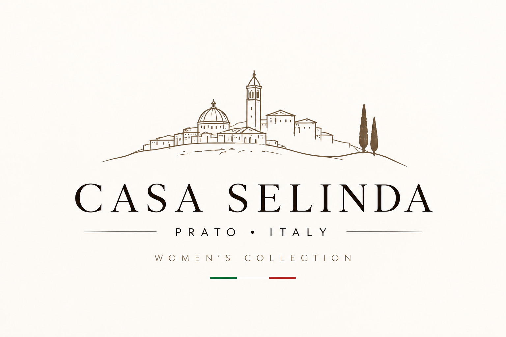
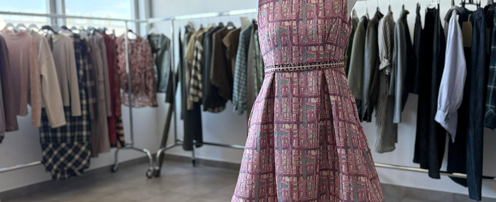
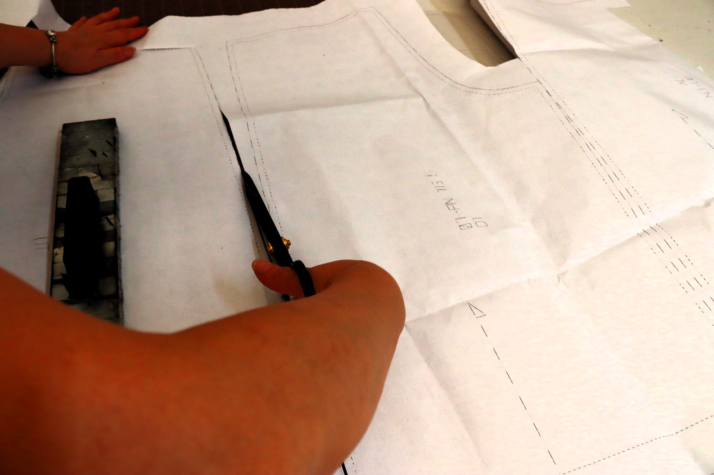
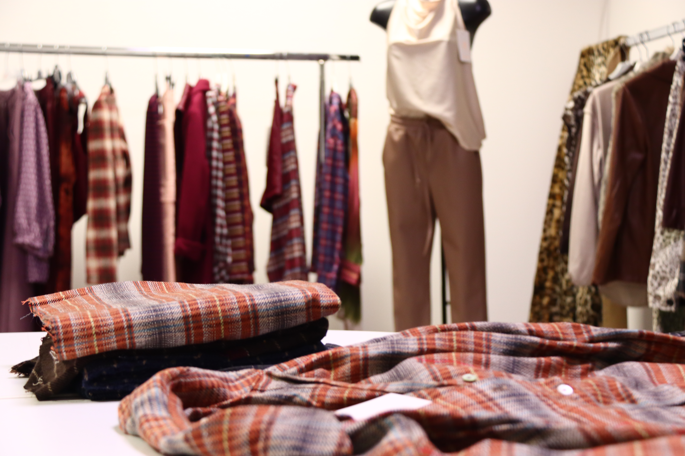
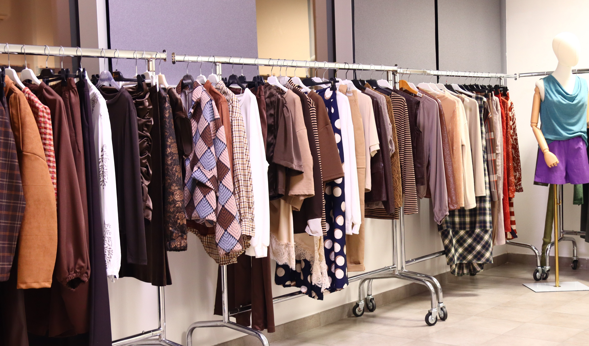

01 — Fabric
It starts with the fabric. Texture, structure and colour guide the first decisions.

Casa Selinda


One piece. One process. Developed in Italy.
01 — Fabric
It starts with the fabric. Texture, structure and colour guide the first decisions.
02 — Development
The idea takes shape. Proportion, construction and detail are developed before the garment reaches the cutting table.

03 — Cutting
From pattern to cloth. Each decision moves the design one step closer to the finished piece.
04 — Collection
The finished collection. From an initial material choice to a piece ready to meet the market.
Based in the heart of Tuscany's textile district, our company has worked across the development of garments from material and process selection to finished production.
Casa Selinda brings that experience into collections created for today's independent retailers and boutiques.


The showroom
One piece, within a wider collection.